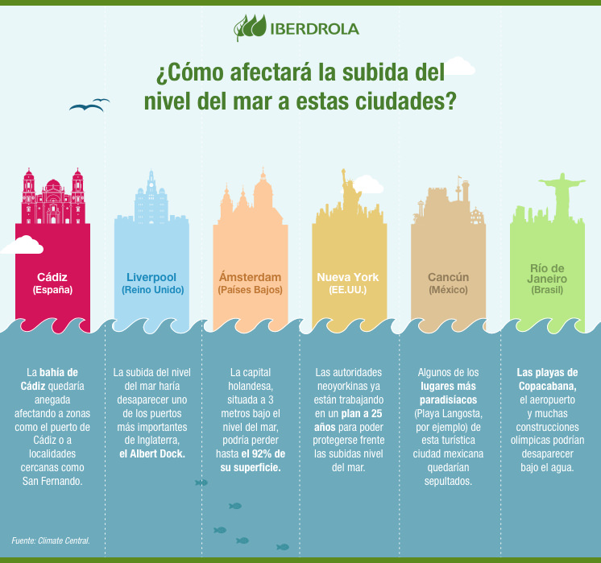
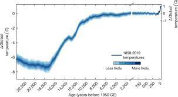
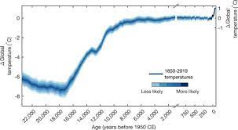
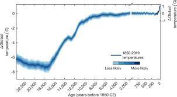

Previo a la COP26, gran parte de la conversación ha girado en torno a predicciones sobre el futuro y los compromisos venideros para que se emprendan acciones más contundentes: neutralidad de carbono hacia 2030 y cero neto hacia el 2050.
Sin embargo, el cambio climático ya es una realidad cotidiana para millones de personas en el mundo.
Noventa por ciento de las personas refugiadas bajo el mandato de ACNUR provienen de países que están sufriendo los estragos de la emergencia climática; lo mismo ocurre con el 70% de las personas desplazadas al interior de sus países a causa de conflictos y violencia.
Estas personas son vulnerables no solo a condiciones climáticas extremas, como ciclones e inundaciones, sino también a la desaparición de sus medios de vida como resultado de sequías y desertificación.
Desde Burkina Faso hasta Bangladesh, desde Afganistán hasta Mozambique, el cambio climático está aumentando los índices de pobreza, inestabilidad y movilidad humana; asimismo, está alimentando tensiones y competencia para obtener recursos que empiezan a escasear.
Las personas que huyeron en algún momento deben hacerlo nuevamente debido a brotes de violencia y condiciones climáticas extremas. No obstante, incluso si se restaura la paz, las personas desplazadas no podrán volver si las áreas donde se encuentran sus hogares se tornan inhabitables debido a sequías, inundaciones o el aumento de los niveles del mar.
Estamos en presencia de la devastadora fusión entre conflicto y cambio climático, la cual está provocando desplazamiento y precariza aún más la vida de las personas que se ven obligadas a huir.
Cómo afecta el cambio climático a los océanos del planeta
"Hace mucho que el océano soporta la carga del impacto del ser humano sobre el calentamiento global", afirma el Plan de acción contra el cambio climático de la ONU. Gracias a su labor como mayor sumidero de carbono del planeta, el océano absorbe el exceso de calor y energía liberado a causa de las emisiones de gases en aumento atrapadas en el sistema de la Tierra. En la actualidad, el océano ha absorbido alrededor del 90 % del calor generado por unas emisiones al alza.
A medida que un exceso de calor y energía calientan el océano, el cambio en la temperatura lleva a unos efectos progresivos sin precedentes, que incluyen el deshielo de los polos, el aumento del nivel del mar, olas de calor marinas y acidificación del océano.
Estos cambios provocan, en última instancia, un efecto perdurable sobre la biodiversidad marina y sobre las vidas y medios de subsistencia de las comunidades costeras, e incluso más, entre las que se incluyen cerca de 680 millones de personas que viven en áreas costeras bajas, casi 2000 millones que viven en la mitad de las grandes metrópolis del mundo situadas en la costa, casi la mitad de la población mundial (3300 millones) que depende de la pesca para obtener sus nutrientes proteicos y casi 60 millones de personas que trabajan en la industria pesquera y el sector acuícola en todo el mundo.
Presentamos aquí algunas de las consecuencias más importantes de estos impactos del cambio climático sobre el océano.
La subida del nivel del mar

El aumento del nivel del mar provocado por el calentamiento global podría alcanzar los 2 metros de altura a finales del siglo XXI. Esta crecida de los océanos dejaría miles de kilómetros de costa a merced de las inundaciones, comprometiendo la seguridad de 745 millones de personas en todo el mundo.
Cuando en 1968 los astronautas del Apolo 8 tomaron las primeras fotografías en color de la Tierra, toda la humanidad pudo constatar que nuestro planeta, además de redondo, es de un intenso color azul. Medio siglo después sabemos que los mares y océanos cubren el 71% de la superficie terrestre, lo que dota a nuestro mundo de esa tonalidad tan característica que lo convierte en un lugar único de nuestra galaxia y, quizás, de todo el universo.
Aumento del nivel del mar
La subida del nivel del mar, ¿un peligro real para nuestro futuro?
Naturaleza
El aumento del nivel del mar provocado por el calentamiento global podría alcanzar los 2 metros de altura a finales del siglo XXI. Esta crecida de los océanos dejaría miles de kilómetros de costa a merced de las inundaciones, comprometiendo la seguridad de 745 millones de personas en todo el mundo.
aumento nivel mar
El aumento del nivel del mar amenaza con sumergir cientos de ciudades costeras en todo el mundo.
Cuando en 1968 los astronautas del Apolo 8 tomaron las primeras fotografías en color de la Tierra, toda la humanidad pudo constatar que nuestro planeta, además de redondo, es de un intenso color azul. Medio siglo después sabemos que los mares y océanos cubren el 71% de la superficie terrestre, lo que dota a nuestro mundo de esa tonalidad tan característica que lo convierte en un lugar único de nuestra galaxia y, quizás, de todo el universo.
¿Por qué aumenta el nivel del mar? Causas
Lo que nadie imaginaba hace cinco décadas es que las emisiones actuales de CO2 calentarían el planeta hasta propiciar el deshielo de los polos y el retroceso de los glaciares. La velocidad a la que avanza el cambio climático, intensificada por la acción del hombre, ha elevado el nivel del mar unos 7 cm desde 1993 y unos 18-20 cm desde 1900, según recogió el Gobierno de EE.UU. en su informe Climate Science Special Report (CSSR).
Paises mas afectados por elaumento del nivel del mar
India
Indonesia
Tailandia
Japon
Pilipinas
Belice
Vietman
Los efectos también pueden apreciarse en México, principalmente en el Golfo de México y la península de Yucatán. En palabras de la investigadora del ICMyL: “hay puntos en donde se reciente más porque son zonas bajas, además en esa parte del país tenemos la recurrencia de fenómenos de subsidencia –que provoca que los terrenos se hundan–, a diferencia de lo que tenemos en la mayor parte de la costa sur del Pacífico. Una zona muy vulnerable es, por ejemplo, la ciudad de Coatzacoalcos y su área aledaña, la laguna de Alvarado en el sur de Veracruz. Todo el sur del Golfo de México es de las zonas más vulnerables”.
Temperaturas mas elevadas
Los últimos seis años han sido los más cálidos registrados desde 1880, según un comunicado de prensa del 15 de enero de la Organización Meteorológica Mundial (OMM), y 2016, 2019 y 2020 fueron los tres primeros. 2020 estuvo 1,2°C por encima de las temperaturas de la era preindustrial (1880).
La OMM predice que hay 20% de probabilidad de que el aumento de las temperaturas supere temporalmente los 1,5°C a partir de 2024.
“La velocidad a la que aumentan las temperaturas es alarmante”, dice Pascal Peduzzi, director del GRID-Ginebra del Programa de las Naciones Unidas para el Medio Ambiente (PNUMA).
“A este ritmo, podríamos alcanzar + 1,5 ° C en los próximos 15 años”, advirtió Peduzzi.
En el Acuerdo de París, los Estados Miembros se comprometieron a mantener el calentamiento global muy por debajo de los 2°C, preferiblemente en 1,5°C, en comparación con los niveles preindustriales. Cada uno de los países que firmaron el acuerdo estableció un objetivo, conocido como contribución determinada a nivel nacional (NDC por sus siglas en inglés) para reducir las emisiones de gases de efecto invernadero para alrededor de 2030.
En enero de este año, António Guterres, secretario general de las Naciones Unidas, dijo que 2021 era un año crítico para el clima y pidió una acción multilateral. Instó a los Estados Miembros a presentar contribuciones determinadas a nivel nacional que permitan reducir las emisiones mundiales en un 45% para 2030, en comparación con los niveles de 2010; hizo un llamado a los donantes y bancos multilaterales de desarrollo aumentar el porcentaje de los recursos financieros que se destinan a la adaptación de 20% a 50% como mínimo para 2024; e insistió en que los países desarrollados cumpliesen su compromiso de movilizar US$ 100.000 millones anuales para la acción climática en los países en desarrollo.

Perdidas de especies
Actualmente, el mundo es 1,1 grados centígrados más caliente que en tiempos preindustriales, lo que representa un calentamiento a una velocidad sin precedentes por los menos en los últimos 2.000 años de la Tierra. El cambio climático, causado por el hombre, está afectando drásticamente la vida en el planeta y, si la temperatura sigue aumentando, muchas especies de animales y plantas desaparecerán. Así lo señala el informe Sintiendo el Calor: El destino de la naturaleza más allá de los 1,5 °C de calentamiento global de WWF.
Con el aumento de la temperatura media global y sumado a otros motores de la pérdida de biodiversidad, los hábitats se han ido reduciendo significativamente, recursos vitales como el agua y el alimento escasean, y entornos que antes resguardaban especies ahora son inhabitables.
Ante este escenario, la cuestión es adaptarse o desaparecer. La publicación afirma que algunas especies aprenderán a vivir en condiciones de altas temperaturas y fenómenos climáticos extremos o se desplazarán a espacios geográficos con condiciones más favorables. Lamentablemente, muchas otras son incapaces de adaptarse o desplazarse, por lo cual están en riesgo de extinción.
Actualmente estamos presenciando la sexta extinción masiva, causada en gran medida por las actividades humanas, y el cambio climático la está acelerando. La ONU estima que un millón de especies están amenazadas de extinción a nivel mundial, muchas de las cuales tendrán lugar durante las próximas décadas.
La desaparición de cualquier especie vegetal o animal tiene graves consecuencias en el equilibrio natural, pues cada una cumple funciones en los ecosistemas. Además, la pérdida de biodiversidad también afecta directamente a las personas. La naturaleza brinda alimento, agua, oxígeno, absorbe dióxido de carbono y presta otra infinidad de servicios ecosistémicos, de los cuáles dependen las poblaciones en todo el mundo.
10 de las especies más amenazadas por el calentamiento global:
Tortuga laúd (Dermochelys coriácea)
Se pueden encontrar en el océano Atlántico, Índico y Pacífico, y tienen playas de anidación en diferentes costas latinoamericanas, entre ellas, Colombia. Esta especie es la más grande de todas las tortugas e, igual que la mayoría, está en peligro de extinción.
Uno de los factores de riesgo es el cambio climático, pues está afectando su reproducción y la composición de sus poblaciones. El sexo de una tortuga marina se define durante la incubación del huevo en la playa y depende de la temperatura de la arena. El calor conduce al nacimiento desproporcionado de tortugas hembras e, incluso, un aumento drástico de la temperatura podría llevar a que los huevos no eclosionen, es decir, a que no se quiebren para permitir la salida de la cría. Además, el aumento del nivel del mar y el incremento de las tormentas, ambos efectos del cambio climático, arrasan los nidos de las tortugas y están destruyendo sus playas de anidación.
Pingüino Emperador (Aptenodytes forsteri)
Estos pingüinos requieren de hielo estable durante al menos nueve meses al año como plataforma para aparearse, incubar huevos, criar a sus polluelos y reemplazar sus plumas durante la muda de plumaje anual. También necesitan que haya huecos en el hielo marino para acceder a sus lugares de alimentación.
Por ello, la especie es muy vulnerable frente a cualquier cambio del hielo marino. Si la capa de hielo se vuelve muy extensa, los adultos deben viajar largas distancias para llegar al mar abierto y a sus presas para alimentarse, lo que requiere mayor energía y afectaría su reproducción. Por el contrario, si el hielo empieza a escasear porque se forma muy tarde en agosto o desaparece muy temprano en primavera, debido a las altas temperaturas, los polluelos no alcanzan a desarrollar el plumaje impermeable que necesitan para sobrevivir el frío del océano.
Científicos pronostican que, de seguir aumentando la temperatura de la Tierra, las poblaciones de pingüinos emperadores disminuirán drásticamente y muchas estarán al borde de la extinción para 2100.
Arrecifes de coral de aguas cálidas (formados, por ejemplo, por el coral cuerno de ciervo)
Los arrecifes de coral sustentan algunos de los ecosistemas con mayor biodiversidad del planeta, proporcionando refugio, alimento y áreas de desove (espacios para poner huevos) a miles de especies marinas, y, por esa función, acaban siendo determinantes para la seguridad alimentaria y los medios de vida de millones de personas.
Lamentablemente, en los últimos 30 años, la mitad de ellos han desaparecido por la contaminación, la sobrepesca, entre otras causas. A ello se suma el cambio climático que está acidificando y calentando los océanos, lo que ha provocado eventos de blanqueamiento de coral a gran escala y más seguidos, que podrían conducir a su extinción.
La ciencia estima que, con un calentamiento global de 1,5 grados centígrados por encima de los niveles preindustriales, para 2050 más del 70% de los arrecifes de coral desaparecerán. Si el calentamiento alcanza los 2 grados, éstos prácticamente se extinguirán de la Tierra.
Leopardo de las nieves (Panthera uncia)
Altamente adaptados al frío, los leopardos de las nieves habitan las altas montañas del centro y sur de Asia desde hace más de dos millones de años, pero, lamentablemente, se estima que quedan tan solo 4.000 individuos. Una de las amenazas que los acecha es el cambio climático que está alterando los climas montañosos a los que están adaptados.
Se estima que para 2070 sus hábitats se reducirán en un 23% y, en países como Bután y Nepal, más de un 80%. Además, con el aumento de temperatura, es probable que los bosques se expandan a costa de las praderas alpinas donde habitan, permitiendo la llegada de nuevos depredadores como lobos y leopardos comunes. Esto podría resultar en una intensa competencia por alimentos y recursos, la cual afectaría la supervivencia del leopardo de las nieves.
Hipopótamo (Hippopotamus amphibius)
Se encuentra en muchas partes del África subsahariana, sin embargo, en las últimas décadas sus poblaciones han ido disminuyendo debido a múltiples razones, entre ellas, la caza furtiva, la destrucción de sus hábitats y el cambio climático. El aumento de las temperaturas, los periodos prolongados de sequía y las precipitaciones irregulares reducen los niveles y la calidad del agua, de la que depende la especie. Como animales principalmente acuáticos, no se adaptan bien a las altas temperaturas fuera del agua, lo que los hace vulnerables a las condiciones de sequía que puede provocarles una grave deshidratación e incluso la muerte.
Rana de Darwin (Rhinoderma darwinii)
Habita en los bosques templados australes y los humedales de Chile y Argentina, y, en los últimos años, ha ido desapareciendo por la degradación de sus hábitats y una enfermedad infecciosa causada por el hongo quitrido, que ha provocado la disminución de al menos 500 especies de anfibios en el mundo. Se prevé que el calentamiento global continúe reduciendo los espacios donde vive y que las altas temperaturas faciliten los brotes de nuevas enfermedades mortales.
Mono ardilla de vanzolini (Saimiri vanzolinii)
Solo se encuentra en una determinada área en la Reserva de Desarrollo Sostenible Mamirauá en Brasil. La especie tiene la distribución geográfica más pequeña de todos los primates neotropicales de la que se tenga conocimiento. Vive en un ecosistema boscoso de llanura aluvial que se inunda estacionalmente por ríos, lo que lo hace altamente vulnerable al calentamiento global.
Se espera que el hogar de estos monos se reduzca en casi un 100% debido a la combinación del aumento de los niveles de agua, el incremento de las temperaturas y las inundaciones extremas provocadas por el cambio climático. Debido a que toda la población vive en un mismo espacio, una sola inundación extrema podría acabar con toda la distribución de la especie.
Abejorro (Bombus distinguendus)
Los abejorros, uno de los polinizadores más importantes del mundo, están adaptados a bajas temperaturas por el calor que generan al volar y que conservan en su cuerpo peludo. Sin embargo, el calentamiento global ha cambiado las reglas del juego. Con el aumento de las temperaturas, los abejorros son susceptibles al sobrecalentamiento, por lo cual, algunas poblaciones se han desplazado a tierras más frías y otras han desaparecido.
Los abejorros polinizan muchos tipos de plantas silvestres y cultivos agrícolas. La pérdida de los importantes servicios ecosistémicos que nos brindan amenaza la seguridad alimentaria y la biodiversidad en general.
Frailecillo atlántico (Fratercula arctica)
Pasan la mayoría del tiempo en el mar alimentándose y viajando, y vuelven a tierra firme unos meses al año para reproducirse. El 90% de su población se encuentra en Europa, sin embargo, en las últimas dos décadas se ha ido reduciendo. Uno de los factores que lo amenazan es el calentamiento global, que ocasiona eventos climáticos más severos y frecuentes.
Por ejemplo, los fuertes vientos y lluvias afectan la capacidad de las aves para bucear y encontrar alimento y, en época de reproducción, el clima extremo enfría los huevos y las tormentas destruyen los nidos con los polluelos. El aumento de la temperatura también afecta toda la red alimentaria marina, de la que dependen los frailecillos.
Café arábigo (Coffea arabica)
En el mundo se cultivan dos especies principales de café: arábigo y robusta. La primera representa alrededor del 60% de la producción mundial y es la variedad que se cultiva en Colombia. Esta especie prospera en temperaturas promedio de entre 18 y 22 grados centígrados, y no se adapta bien a condiciones de calentamiento, precipitaciones escasas o impredecibles, o eventos extremos.
Por ejemplo, las temperaturas altas, la lluvia intensa y la humedad persistente crean un ambiente favorable para hongos que afectan su producción de granos. A ello se suma que el cambio climático amenaza las poblaciones de abejas encargadas de polinizar las plantas, entre ellas, las de café.
 
